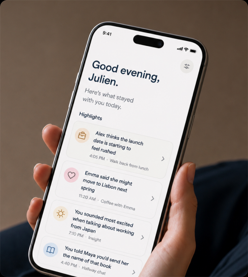
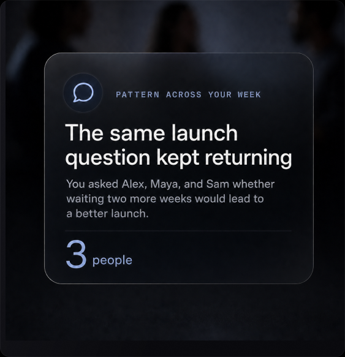

Remember everything that mattered.
Larkin is a wristband that captures and transcribes the conversations around you, then surfaces what is worth remembering.
Ships Q1 2027 · Your reservation locks in the $59 pre-order price

“Marie said she'd introduce you to Daniel before Thursday.”
Larkin is an always-listening AI wristband that captures what you said or heard.
An AI wearable for everyday conversations
Real moments from real days — Larkin quietly keeps what mattered.

On a walk
The idea that came up mid-stride, saved before it slips away.

Over coffee
The advice a friend shared, exactly as they said it.

In meetings
Decisions and follow-ups, captured without taking notes.

At dinner
The story you’ll want to tell again, word for word.

At home
The little things they say that you never want to forget.
Be fully present. Larkin takes care of the rest.

Summaries of your conversations
Larkin finds the moments, decisions, and ideas that mattered — so you don't have to remember everything.
Your daily highlights
Larkin automatically captures promises and follow-ups from you and the people you talk to.


Patterns you wouldn’t notice on your own
Discover patterns across your week — the questions you keep asking, the topics that matter most, and how you show up.
Ask Larkin anything
Larkin turns your questions into answers from your own conversations — what was said, what you promised, and how you showed up. Grounded in your day, delivered instantly.
The Larkin wristband
Crystal-clear audio
Dual microphones and advanced noise filtering ensure clear comprehension and transcriptions.
Up to 7 days of battery life
Up to 160 hours on a single charge.
Easily start and stop
A single press of the button starts and stops capturing.
Syncs to your phone
Automatically syncs to your iPhone and Android phone via Bluetooth.
Designed to disappear into your day


Reserve your Larkin
$10 today locks the $59 pre-order price
- Fully refundable, any time, no questions.
- Locks the $59 pre-order price. Full price at launch: $99.
- Ships Q1 2027.
You'll be charged $10 today; the remaining balance at ship time.
Questions, answered
Is Larkin always listening?
When the green light on the band is on, Larkin is listening. When it's off, it isn't. You can turn it off from the band or from the app.
What about the people I'm talking to?
The green light is designed so the people around you can see when Larkin is on. In most places, letting someone know you're recording is enough. Larkin is not designed to record people without their awareness.
What happens when my phone isn't nearby?
Larkin holds up to 24 hours of transcribed conversation on the band itself. When your phone is back in range, it syncs automatically.
Will it fit a small wrist?
Yes. The strap adjusts for wrists from 5.5 to 8 inches. It's designed to be worn by anyone, including on smaller wrists where most fitness bands look oversized.
Is the $10 reservation really refundable?
Yes. You can refund it any time before your unit ships. No form to fill out, no questions asked. Email us and we'll process it.
When will it ship?
Larkin ships Q1 2027. We're finishing prototype validation now and moving into tooling this fall.
Stop losing the conversations that matter.
Reserve LarkinShips Q1 2027 · $10 today locks the $59 pre-order price.